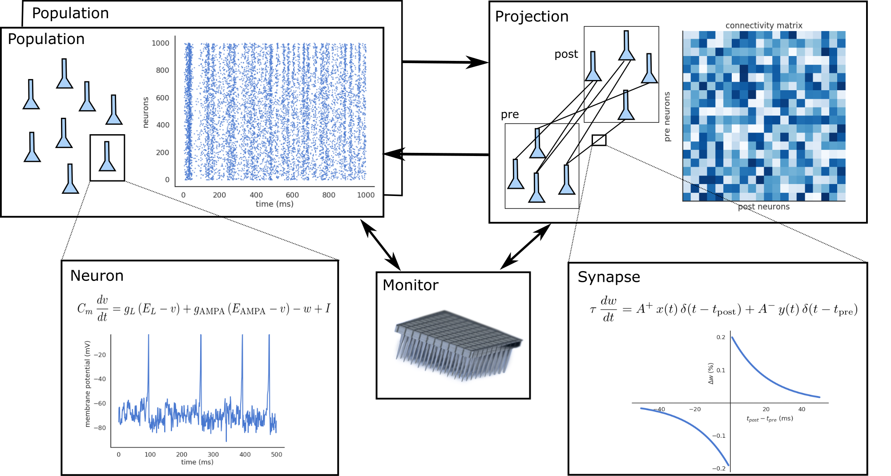

ANNarchy (Artificial Neural Networks architect)
Resources
White paper:
Vitay et al. (2015)
ANNarchy: a code generation approach to neural simulations on parallel hardware.
Frontiers in Neuroinformatics 9. doi:10.3389/fninf.2015.00019
Source code:
https://github.com/ANNarchy/ANNarchy
Documentation:
Forum:
Installation
Installation guide: https://annarchy.github.io/Installation/
Using pip:
pip install ANNarchyFrom source:
git clone https://github.com/ANNarchy/ANNarchy.git
cd annarchy
pip install -e .Requirements (Linux and MacOS):
- g++/clang++
- python >= 3.6
- numpy
- cython
- sympy
ANNarchy also works out-of-the-box on colab.research.google.com, you just need to pip install it at the beginning of the notebook:
!pip install ANNarchyStructure of a script
A neuro-computational model in ANNarchy is composed of:
- Several populations implementing different neuron models.
- Several projections between the populations, that can implement specific synapse models.
- Monitors to record what is happening during a simulation.

The following script provides the basic structure of a model. First, the neuron and synapse models have to be defined using the equation-oriented interface. Populations are then created and connected with each other using projections. The network can then be generated and compiled, before the simulation can start.
from ANNarchy import *
# Create neuron types
neuron = Neuron(...)
# Create synapse types for transmission and/or plasticity
stdp = Synapse(...)
# Create populations of neurons
pop = Population(1000, neuron)
# Connect the populations through projections
proj = Projection(pop, pop, 'exc', stdp)
proj.connect_fixed_probability(weights=Uniform(0.0, 1.0), probability=0.1)
# Generate and compile the code
compile()
# Record spiking activity
m = Monitor(pop, ['spike'])
# Simulate for 1 second
simulate(1000.)The rest of this tutorial explains step by step how to implement those different mechanisms.